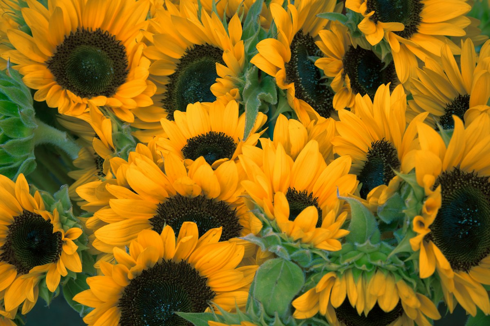

Handmade with care
Finished by hand, with attention in every detail.
A little slower. A little more lovely.
Crochet flowers, keepsakes, and small everyday joys — thoughtfully made one stitch at a time.

 Made with care
Made with careA small world of handmade
Picked with love


From the maker's table
Every loop is a little decision: the curve of a petal, a color that feels just right, a finish made to last. Knots & Bloom celebrates the charm of handmade objects and the joy of giving something with a story.
Find a ready-to-love piece or tell us what you have in mind. Custom ideas begin with a conversation, and every detail is agreed before making starts.
Read our story ↗The details matter
Thoughtful keepsakes for gifting, decorating, and making an ordinary day feel special.
Finished by hand, with attention in every detail.
Small-batch pieces with their own handmade character.
Crochet flowers bring a lasting touch of color.
Add a personal note or ask about custom colors.

A gift with your name on it
Share the occasion, the palette, and your idea. We’ll talk through the details before a hook is picked up.
Start a custom order ↗Notes from the bench